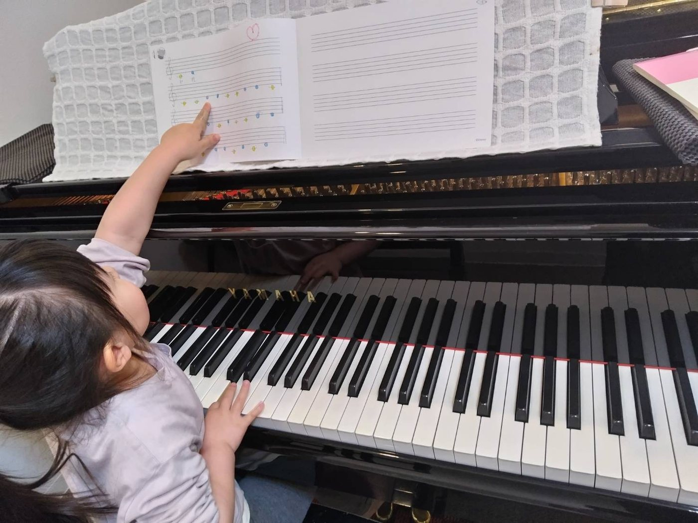
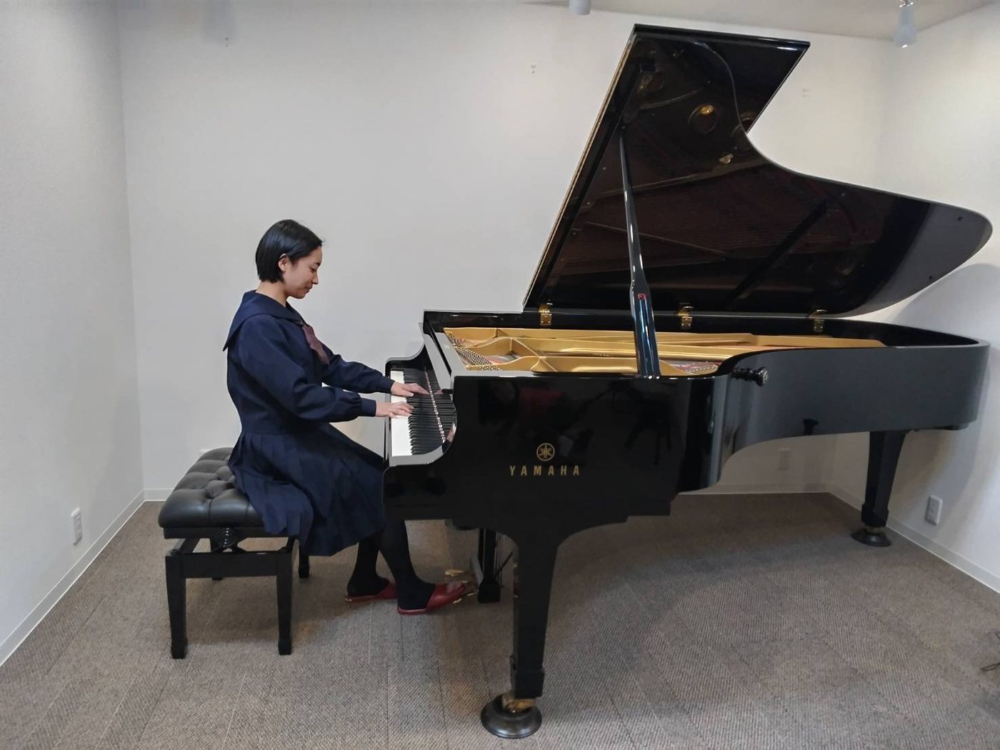
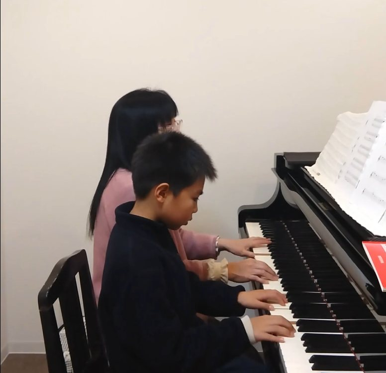
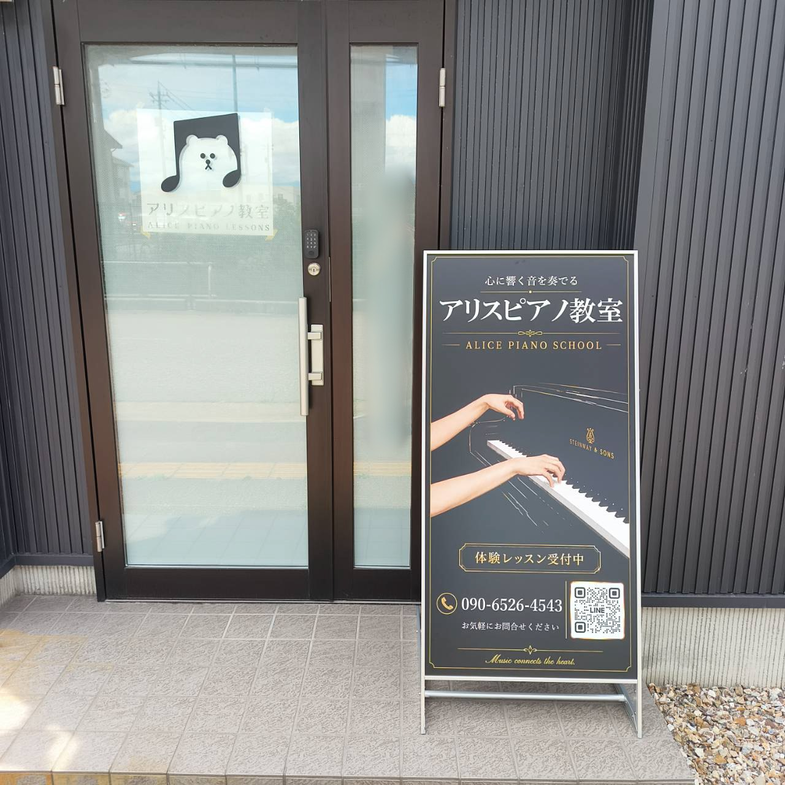
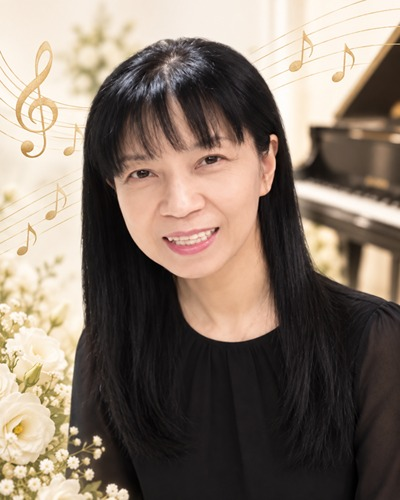

はじめてピアノを習う方へ
音符・リズム・指の動かし方から、一人ひとりのペースで丁寧に進めます。保護者の方がピアノ未経験でも大丈夫です。
子ども向けレッスンを見るKOMATSU CITY / ALICE PIANO SCHOOL
通常レッスンは1回60分。音符・リズムの基礎から、譜読み後の音色・表現・テクニック、学校の伴奏や憧れの曲の仕上げまで、現在の課題と目標に合わせて進めます。必要に応じて、レベルに合わせた楽譜のアレンジにも対応します。
小松市小寺町／鍵盤デザインの外観が目印／駐車場あり
「空いている曜日だけ知りたい」「少し質問したい」だけでも大丈夫です。
小松市・粟津周辺・能美市・加賀市方面からもご相談いただけます。はじめての方は教室の雰囲気や先生との相性を、経験者の方は今弾いている曲の課題や今後の伸ばし方を、体験時にゆっくり確認できます。
年齢だけで分けるのではなく、現在の経験や目標に合わせてレッスンを組み立てます。小さなお子さまの第一歩から、中高生・経験者のさらなる上達までご相談いただけます。
音符・リズム・指の動かし方から、一人ひとりのペースで丁寧に進めます。保護者の方がピアノ未経験でも大丈夫です。
子ども向けレッスンを見る音色・表現・テクニック、学校の伴奏、発表会や憧れの曲など、「弾けるようになった後」の課題と目標に合わせます。
中高生・経験者向けを見る曲を落ち着いて見ながら、基礎から表現まで個別に確認できます。
経験者の方は、今弾いている曲や教材をお持ちいただけます。
音色やタッチの違いを感じながら、のびのびと演奏できます。
学校伴奏、好きな曲、発表会、音大受験・保育志望までご相談ください。
譜読みができるようになった後も、音色、フレーズ、タッチ、ペダル、身体の使い方など、演奏には多くの伸びしろがあります。
小学校高学年・中学生・高校生、ピアノ経験者の方にも、今困っているところを確認しながら、目標の曲を自分らしく弾けるよう丁寧にサポートします。
体験では、今弾いている曲やこれまで使ってきた教材をお持ちください。現在の課題と、これから伸ばせるポイントを一緒に確認します。


小さなお子さまの第一歩から、小学校高学年・中高生・経験者、大人の方まで。年齢や進度に応じて、一人ひとりの手元と音を確認しながら進めます。



小松市小寺町の個別ピアノ教室です。小松市内はもちろん、粟津周辺・能美市・加賀市方面からもご相談いただけます。
音符・リズムの基礎から、楽しく続けられるように丁寧に進めます。保護者がピアノ未経験でも大丈夫です。
学校の伴奏、発表会、好きな曲、音色や表現など、譜読みの先にある課題を丁寧に見ていきます。
昔習っていた方、趣味で好きな曲を弾きたい方も歓迎。生活ペースに合わせて無理なく進めます。
音大受験や、保育士・幼児教育を目指す方のピアノ準備にも対応しています。

アリスピアノ教室は、黒と白の鍵盤をモチーフにした外観が目印です。明るい道路沿いにあり、横に駐車場・駐輪場もございます。
お子さまの送迎はもちろん、大人の方のレッスンにも通いやすい環境です。
写真で見る、アリスピアノ教室のレッスン環境です。はじめての基礎から、経験者の音色・表現、ピアノの環境、入口の分かりやすさまでご紹介します。
先生が近くで確認しながら、姿勢・指の動き・音の出し方まで見ていきます。
完全防音スタジオで、コンサート用グランドピアノの音色を感じながら学べます。
中高生・経験者には、タッチ、フレーズ、ペダル、曲の仕上げまで丁寧に伝えます。

入口前の看板が目印です。体験レッスンにお越しの方も迷いにくいよう整えています。
火曜日・木曜日・金曜日は比較的ご案内しやすく、月曜日は一部の時間帯で受付中です。水曜日・土曜日は混み合っていますが、ご希望の時間帯によってはご案内できる場合があります。
曜日・時間帯の確認だけでも大丈夫です。
先生の関わり方やお子さまの変化、体験レッスンでの印象について、保護者さまから温かいお声をいただいています。
Google口コミより両親共に未経験者で、不安や心配がありましたが、先生にお会いし、お話しやレッスンの様子を見て、子供のいいところを褒めて伸ばしてくださる指導で、子供ものびのび！やる気ムクムク！の様子です。
どんな事も嫌な顔をせず、親切丁寧に教えてくださいます。
無理にピアノを買うように言われたりもせず、そこの家庭の事情なども考慮しながら一緒に考えてくださる、本当に子にも親にも寄り添ってくださいます。
これからの子供の成長が楽しみです♪
Google口コミよりいつも笑顔で優しく、教え方が丁寧でわかりやすく、子供のペースに合わせて指導してくださいます。おかげでピアノがどんどん好きになりました。
Google口コミより無料体験レッスンを受けさせていただきました( ◠‿◠ )とても気さくな先生でピアノのレッスンも子供も楽しんで参加していました！
出来ていないところを置いてけぼりにせず、一人一人の生徒さんの進捗をきちんと確認しながらご指導をされている様子が伝わりとても信頼できる先生だと感じました。
生徒さんのレベルに合わせて楽譜も作っていらっしゃるということもお聞きし、生徒さんの一人一人と向き合っておられる先生だと感じました。
一人ひとりの理解度や目標に合わせて、無理なく続けられるように工夫しています。
難しすぎる曲でも、その方のレベルに合わせて無理なく挑戦できる形に整えます。
譜読みの先にあるタッチ、フレーズ、聴き方、ペダルを整え、伝わる演奏へつなげます。
本番の日程を確認しながら、テンポ、音色、バランス、表現まで丁寧に整えます。
ピアノ購入や練習環境についても、無理にすすめず状況に合わせて一緒に考えます。
無料体験は60分〜120分。はじめての方は基礎から、経験者の方は今弾いている曲や教材を使いながら、現在の課題と今後の進め方をご案内します。
「空き時間を知りたい」「体験を相談したい」の一言だけでも大丈夫です。
ご都合の良い日時をうかがい、体験日を決めます。
経験者の方は今弾いている曲や教材を使い、課題と伸ばし方を確認します。
完全防音スタジオやピアノの響きを体感できます。
内容・料金を分かりやすく説明。無理な勧誘はありません。
質問だけでも大丈夫です。
レッスン（月4回・1回60分）
教材・発表会費は別途。学年・進度によって段階的に調整します。

幼少期よりピアノ一筋。音楽系高校・音大を経て、地域で50年弱にわたり指導。「まず音楽を好きになる」を大切に、耳・リズム・表現をバランス良く育てるレッスンを行っています。
はじめてのお子さま、小学校高学年・中高生・経験者、好きな曲に挑戦したい大人の方、音大受験や保育士・幼児教育を目指す方まで、一人ひとりに合わせて丁寧にサポートします。
大丈夫です。音符読み・リズムの基礎から、一人ひとりのペースに合わせて丁寧に進めます。
はい、大丈夫です。ご家庭の事情や練習環境もふまえて、無理なく続けられる方法を一緒に考えます。
通常レッスンは1回60分です。落ち着いて取り組める個別レッスンで、一人ひとりの進み方に合わせて丁寧に進めます。
無料体験レッスンは60分〜120分で受付しています。教室の雰囲気やレッスン内容をゆっくり確認していただけます。
水曜日と土曜日は混み合っていますが、ご希望の時間帯によってはご相談できる場合があります。水曜・土曜をご希望の方も、まずはLINEでお問い合わせください。
はい。譜読みの先にある音色・表現・テクニック、好きな曲や学校伴奏の仕上げなど、現在の課題と目標に合わせて進めます。
はい。本番の日程を確認しながら、譜読み、テンポ、音色、ペダル、表現まで丁寧に仕上げます。現在弾いている楽譜をお持ちください。
はい。大人の初心者や、昔習っていたピアノを再開したい方も歓迎しています。好きな曲からのレッスンもご相談ください。
はい。音大受験を考えている方や、保育士・幼児教育を目指す方のピアノ準備にも対応しています。現在のレベルや目標に合わせてご相談いただけます。
はい。本番で自信を持って弾けるようになるまで、通常のレッスン時間にとらわれず丁寧にサポートします。
ありません。ご家庭でゆっくりご相談いただき、LINE・電話・フォームのいずれかでお返事ください。
はい。生徒さんの個性やレベルに合わせて、講師が弾きやすく格好良く聴こえる形にアレンジして進めることもできます。
同じ建物内にピアノレンタルスタジオEtudeがありますが、アリスピアノ教室とは別会社です。レッスンのお問い合わせはアリスピアノ教室へお願いいたします。
「空き時間を知りたい」「今弾いている曲を見てほしい」「学校の伴奏を相談したい」など、質問だけでも大丈夫です。LINE・お電話・フォームよりお気軽にご相談ください。
※送信後2日以内に返信がない場合はLINEでご連絡ください。
アリスピアノ教室は石川県小松市小寺町にあります。小松市内のほか、粟津周辺・能美市・加賀市方面からもご相談いただけます。
小松駅周辺・小松市中心部からも通いやすい立地です。
お車での送迎や、曜日・時間帯についてもお気軽にご相談ください。
教室横に駐車場・駐輪場があります。初めての方にも分かりやすい外観です。
〒923-0806
石川県小松市小寺町乙38番地1
鍵盤デザインの外観が目印です。建物向かって左が教室で、横に駐車場・駐輪場があります。
※同じ建物内にピアノレンタルスタジオEtudeがありますが、アリスピアノ教室とは別会社です。ピアノレッスンに関するお問い合わせは、アリスピアノ教室のLINEまたはお電話よりお願いいたします。